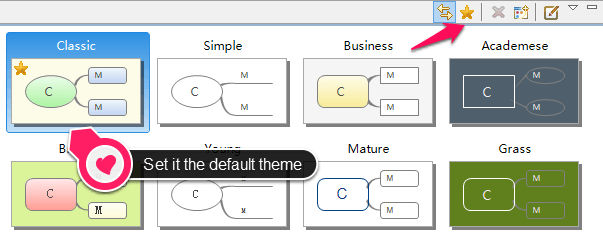

既定のテーマ
XMind のテーマはマインド マップのすべての属性である、背景色、壁紙、テキストのフォント/色/サイズ、ラインなどを管理します。テーマを変更する方法で、簡単にマインド マップ全体のスタイルを変更できます。XMind はデザイン済みの複数のテーマを提供しています。もし、それのどれかが気に入ったならビューツールバーの[既定のテーマとして設定]をクリックしてください。

XMind Pro を使用している場合は、独自のテーマをデザインを保存し、既定のテーマとしても設定できます。 テーマ を参照してください。
こちらもご覧ください...
ヘルプ センター